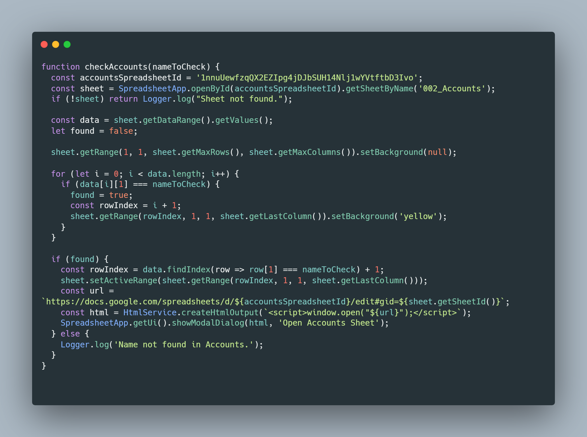
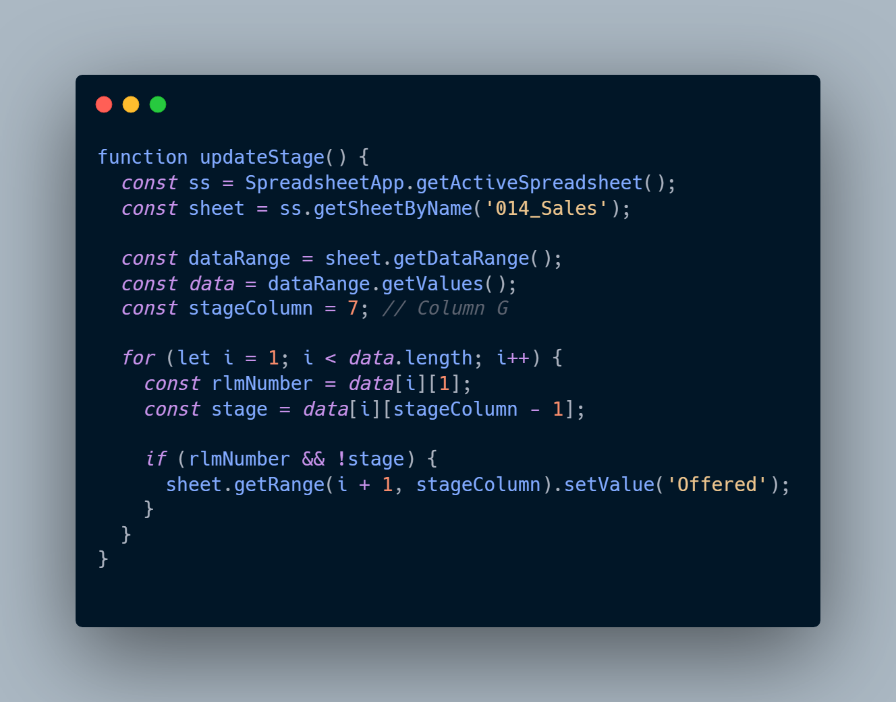
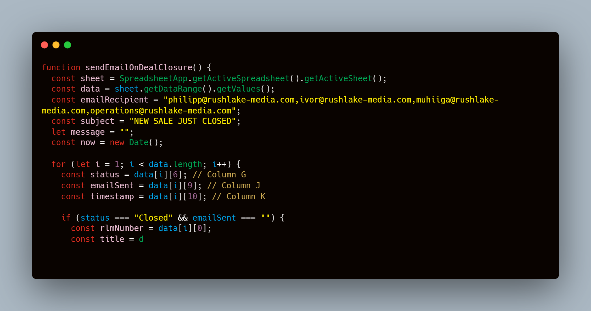
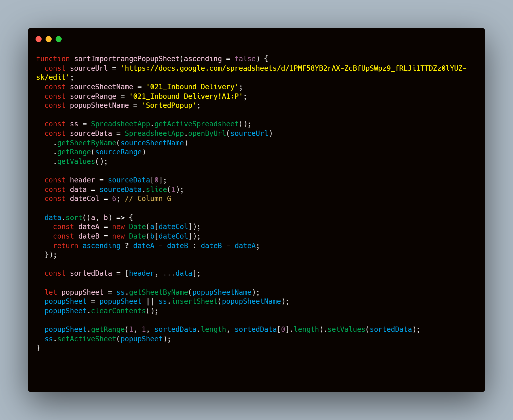
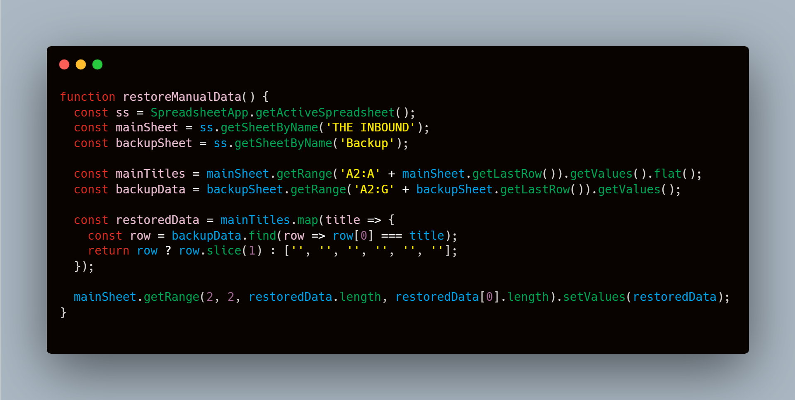
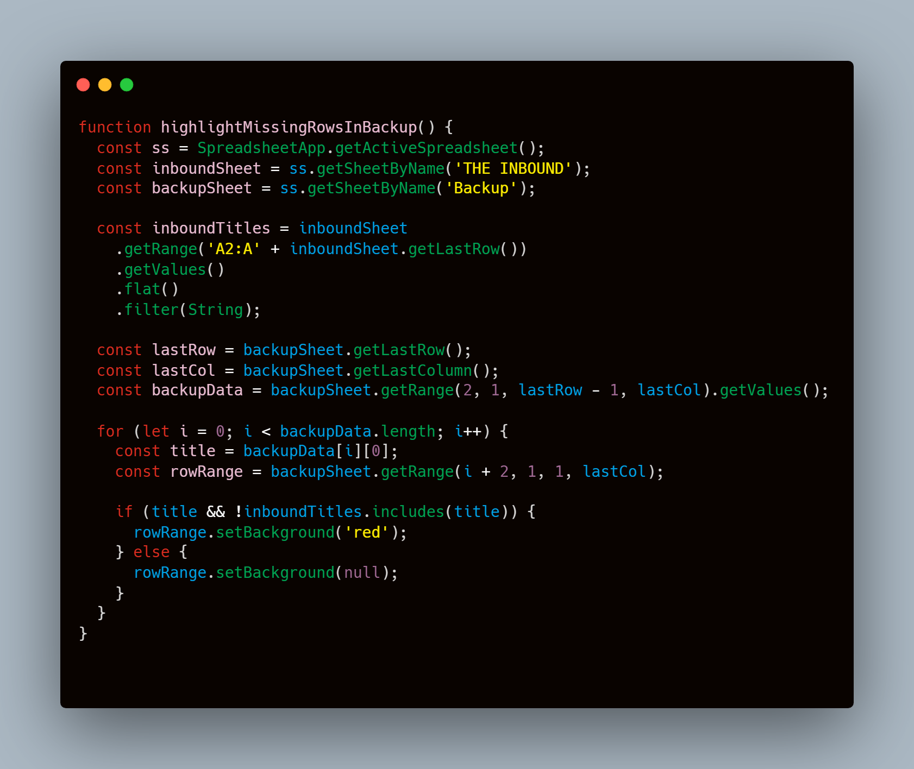
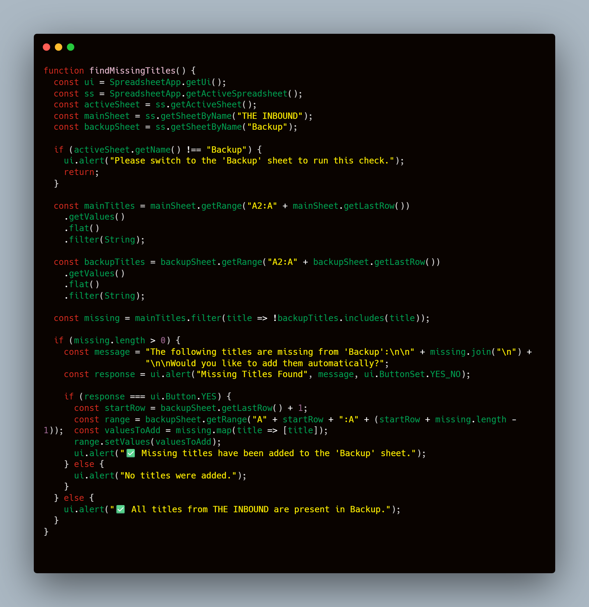

Enables bi-directional navigation between interlinked datasets across multiple sheets. Selecting a reference cell triggers contextual highlighting and auto-focus to corresponding records in a target sheet, reducing lookup time and enhancing relational data workflows.
Automatically updates specific fields based on conditional logic, ensuring consistency in data pipelines. Particularly useful for enriching incomplete records when trigger conditions (e.g., ID presence) are met.
Implements an event-driven notification engine that dispatches customized email alerts to relevant stakeholders when predefined conditions (e.g., stage transitions) occur. Includes duplicate suppression via status tagging.
Fetches external spreadsheet data via URL, sorts it chronologically or by custom rules, and renders it within a structured auxiliary view for on-demand reference or reporting.
Performs intelligent field restoration from backup datasets to maintain data integrity after destructive operations like sorting or row deletions. Ensures continuity of manually entered content.
Scans parallel datasets for row mismatches and flags missing entries via conditional formatting. Facilitates anomaly detection and accelerates manual reconciliation workflows.
Identifies absent primary keys or titles in secondary datasets and optionally appends them, ensuring structural parity across interconnected sheets. Includes user confirmation to prevent unwanted writes.
💡 Note: All scripts leverage Google Apps Script triggers, custom UIs, and built-in SpreadsheetApp services to deliver seamless low-code automation within the Google Workspace ecosystem.